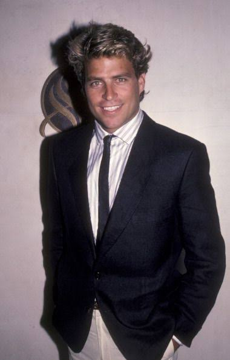
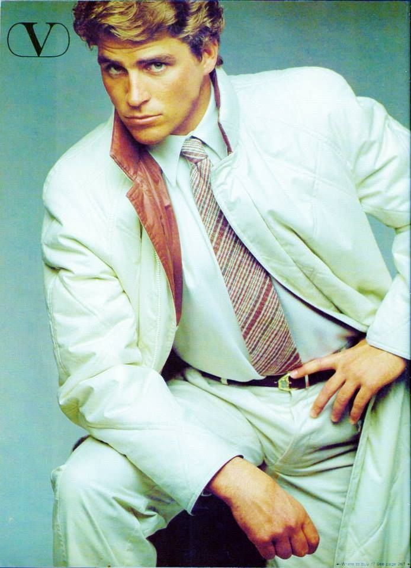

| Nationality | American |
| Born | May 30, 1958 Newport Beach, California, U.S. |
| Education | University of Southern California (attended) |
| Known for | GQ magazine (Aldo Fallai, Bruce Weber); Valentino; #17 on L’Uomo Vogue’s Top 25 Male Models Ever; Making of a Male Model (1983); Happy Days, Married… with Children, Shrinking |
| MMI status | Honorable Mention — Male Model Index |
Ted McGinley (Theodore Martin McGinley, born May 30, 1958, in Newport Beach, California) is an American model and actor who, before he became one of the most recognizable faces in American television comedy, was one of the most beautiful men ever to appear in front of a fashion camera — a face that GQ, Valentino, and the editors of L’Uomo Vogue all independently identified as belonging in the same visual conversation as the greatest male models of his or any other era.[1][2]
Early life
McGinley was born and raised in Newport Beach, California, where he played on the water polo team at Newport Harbor High School. He enrolled at the University of Southern California, but after pursuing work as a model, dropped out and moved to New York in 1979 to model full time — a decision that, given what followed, turned out to be one of the more consequential career pivots in the documented history of the intersection between modeling and acting.[3]
Modeling career
McGinley appeared in the February 1979 issue of GQ alongside Jeff Aquilon in a layout photographed by Bruce Weber — a pairing that placed him next to the man widely credited as the first male supermodel, shot by the photographer who was in the process of defining what American menswear advertising would look like for the next fifteen years.[4] In September 1980, he was photographed by Aldo Fallai for GQ in what became one of the most widely reproduced editorial images of early-1980s American menswear.[5]

He appeared in Valentino advertising in GQ, photographed by Aldo Fallai — one of the most significant Italian fashion photographer placements available to an American model in 1980, and a credit that placed him inside the same European luxury advertising circuit that defined the careers of the era’s most commercially significant male faces.[5]
It was a GQ photograph that ended his modeling career and started something else entirely: a casting director spotted his picture in the magazine and offered him the role of Roger Phillips on Happy Days, which he played from 1980 to 1984. The modeling career that produced the photograph was over; the acting career it accidentally launched would span forty-five years and counting.[3]
Acting career
In 1983, while still on Happy Days, McGinley appeared in Making of a Male Model, a television film starring Joan Collins about the highs and lows of the male modeling industry — a role that drew directly on his own pre-acting modeling experience and placed him, alongside co-star Jon-Erik Hexum, inside the first major fictional treatment of the industry he had just left.[6]
From there, McGinley built one of the most durable careers in American television: Happy Days (1980–1984), The Love Boat (1984–1986), Dynasty (1986–1987), Married… with Children (1991–1997) as Jefferson D’Arcy, Hope & Faith (2003–2006), The West Wing, and most recently Shrinking on Apple TV+. He appeared in Revenge of the Nerds (1984) as Stan Gable and in Wayne’s World 2 (1993). Across approximately ninety film and television credits, he has maintained a continuous presence in American entertainment for over four decades.[3]
Recognition
McGinley is ranked #17 on L’Uomo Vogue’s Top 25 Male Models Ever list (Yahoo! Shine, 22 August 2012) — a placement that, given the brevity of his actual modeling career before television consumed it, speaks entirely to the quality and impact of the work he produced in the short window between leaving USC and joining the cast of Happy Days.[2]
He is listed as an honorable mention on the Male Model Index, and is documented on MaleIconic — The 100 Greatest Male Models of All Time — as part of the broader archival record of male fashion imagery.[7][8]
He is featured in The Gallery, the photographic archive maintained by The Commercial Male.[9]
Legacy
McGinley’s modeling career lasted approximately two years before television claimed him permanently. In that window, he produced editorial work for GQ with both Bruce Weber and Aldo Fallai, appeared in Valentino advertising, and left behind a body of images that L’Uomo Vogue’s editors considered significant enough to rank ahead of eight of the other twenty-four men on their all-time list. He was, by any honest assessment, better looking than most of the men who made modeling their full-time career — and the fact that the industry lost him to acting so quickly is less a commentary on his commitment to modeling than on how immediately and completely the camera translated what it saw in him into something Hollywood wanted for itself.[2]
He married actress Gigi Rice in 1991; they have two sons, Beau and Quinn, and reside in Los Angeles. He continues to act, most recently in Shrinking on Apple TV+.[3]